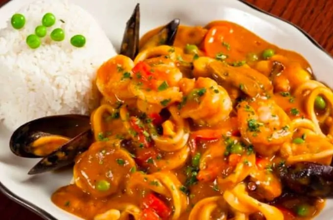

Picante de Marisco

Descripcion
Si eres de nuestra tierra o resides en ella debes haber probado nuestros productos marítimos, bien extendidos por todo el Perú. Es por ello que hoy te hablaremos del maravilloso y exquisito Picante de Mariscos. Un emblemático plato de nuestra gastronomía que se caracteriza por tener entre sus ingredientes varios tipos de ajíes autóctonos. ¡Sigue con nosotros y aprende a prepararlo!
Para la realización de este rico platillo peruano, se requieren diversos tipos de mariscos, al igual que unos cuantos tipos de ajíes. Es importante saber que este exquisito plato picante es un característico guiso a la criolla y, por tanto, también puede ser con otras carnes. El resultado son duda enamorada tu paladar y los de tus comensales.
Ingredientes
- 200 gramos de langostinos
- 100 gramos de lapa cocida
- 150 gramos de calamar
- 100 gramos de pulpo cocido
- 70 gramos de caracol cocido
- 4 unidades de concha de abanico
- 1 cucharadita de ají amarillo fresco
- 1 cucharadita de ají amarillo seco
- 1 cucharadita de ají colorado
- 1 cucharada de ajo molido
- 1 cebolla cortada en pequeños cuadros
- 1/3 taza de fondo de pescado
- 3/4 taza de crema de leche
- 2 rodajas de rocoto
- Medio vaso de vino blanco
- Culantro al gusto
- Sal y pimienta al gusto
- Queso parmesano al gusto
- Aceite
Pasos
- Pela, lava y cocina los mariscos. Deja calentar una sartén con un chorrito de aceite, agrega los 200 gramos de langostinos, 100 gramos de lapa cocida, 150 gramos de calamar, 100 gramos de pulpo y los 70 gramos de caracol. Deja cocer por al menos 5 minutos y reserva.
- Seguidamente, en otra sartén, en donde previamente haz vertido un poco de aceite, coloca la cebolla previamente cortada y deja sofreír por unos minutos.
- Luego, Agrega una cucharada de ajo molido, una cucharadita de ají amarillo fresco y otra de ají amarillo seco, una cucharadita de ají colorado, las dos rodajas de rocoto y la sal y pimienta al gusto. Mezcla hasta tener todo bien integrado.
- Entonces, al momento incorpora a esta mezcla los mariscos que habías reservado y saltea por un par de minutos.
- Seguido, añade medio vaso de vino blanco y deja evaporar. Luego, añade los 3/4 de taza del fondo de pescado para que de esta forma los marisco no queden sin líquido durante la cocción.
- Ahora bien, rectifica la sal e incorpora la crema de leche y el culantro. Vierte poco a poco para lograr una reducción hasta quedar como una rica crema.
- Seguido agrega el queso parmesano a tu gusto y mezcla todo muy bien.
- Finalmente sirve los mariscos y vierte el picante sobre ellos. No olvides espolvorear un poco más culantro y queso parmesano.